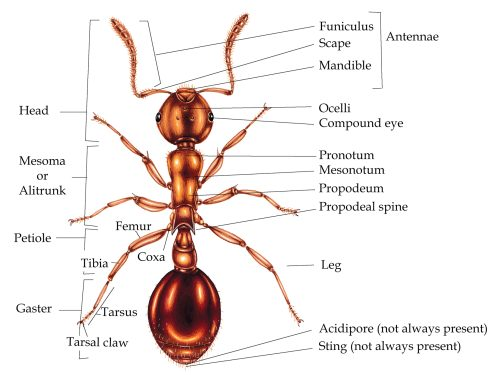
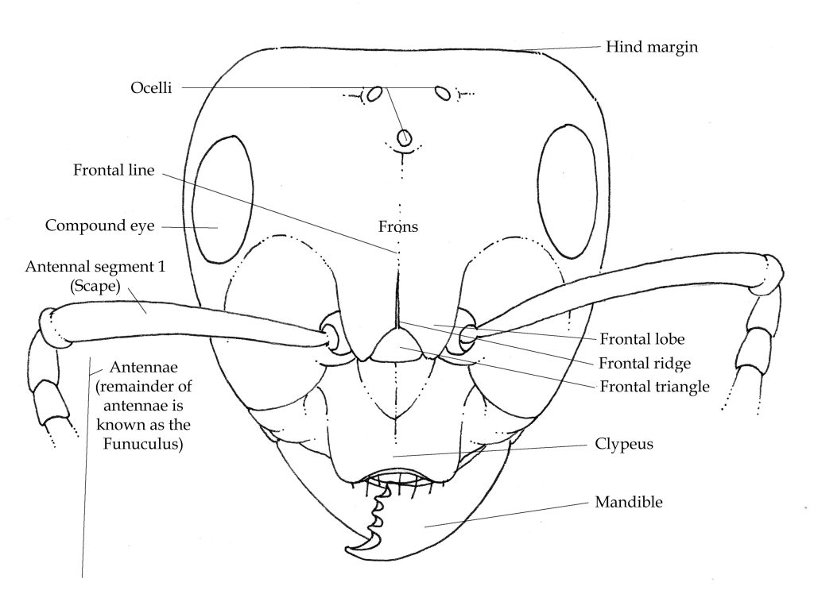
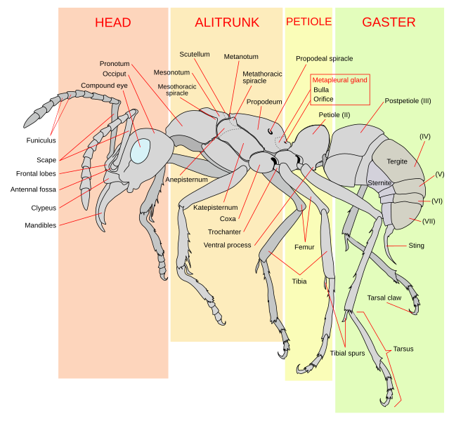
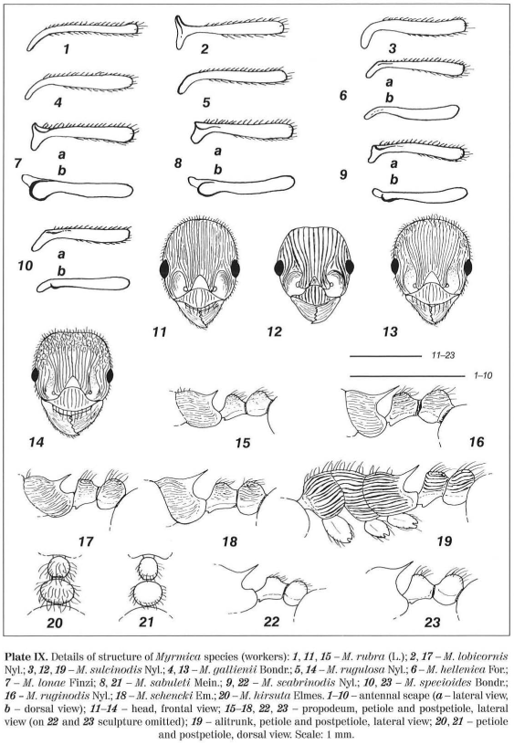

Key to species of Myrmica (workers and queens)
| Characteristic 7: | |
|---|---|
| Antennal scape at base curved, without horizontal lobe or carina, at most slightly angulate (Plate IX: 4,5) | Antennal scape at base distinctly angulate, with horizontal carina or lobe (Plate IX: 6-10) |
| next: 8 | next: 9 |
| Potential species: | |
| Keywords: | |
|---|---|
| antennal scape |

Ant anatomy for beginners, Lizzie Harper
|
| antennal sockets | 
Morphological Terms/Worker Head, via AntWiki
|
| carina |
Morphological Terms/Worker Head, via AntWiki
|
| clypeus | |
| dorsal | Referring to the dorsum or upper surface; opposite is ventral.
Morphological Terms, via AntWiki
|
| dorsum | Referring to the dorsum or upper surface; opposite is ventral.
Morphological Terms, via AntWiki
Mentioned in: 2
|
| frontal carina |
Morphological Terms/Worker Head, via AntWiki
|
| frontal carinae |
Morphological Terms/Worker Head, via AntWiki
|
| frontal lobe |

Ant anatomy for beginners, Lizzie Harper
|
| frontal lobes |

Source, via Wikipedia
|
| head | Ant anatomy for beginners, Lizzie Harper
Mentioned in: 8
|
| lobe | Ant anatomy for beginners, Lizzie Harper
|
| Plate IX |

Wojciech Czechowski, Alexander Radchenko, Wiesława Czechowska. 2002. The ants (Hymenoptera, Formicidae) of Poland
|

{kind=link}